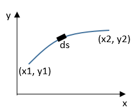
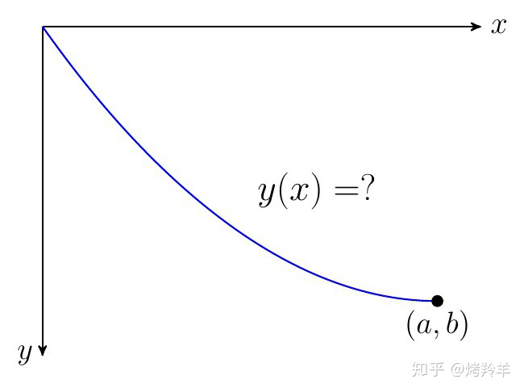
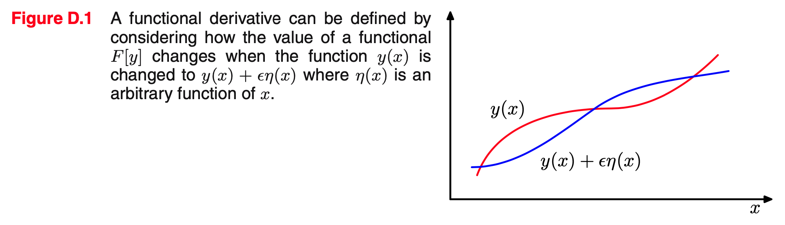

[PRML]Appendix D.Calculus of Variations
在 PRML 第一章中我们遇到了用变分法（calculus of variations）求解优化问题，那么变分法究竟是什么呢？PRML 在 Appendix D 做了介绍。
泛函
众所周知，函数是数到数的映射：输入为数值 \(x\)，输出为数值 \(y(x)\).
将函数的概念进行扩展，我们定义泛函（functional）为函数到数的映射：输入为函数 \(y(x)\)，输出为数值 \(F[y]\). 直观地讲，泛函就是“函数的函数”。
Example 1：给定平面上的两点 \((x_1,y_1),(x_2,y_2)\)，穿过它们的路径有无数条。对其中某条路径 \(y=y(x)\)，以这两个点为端点的路径长度可以通过曲线积分得到[1]： \[ L=\int_{x_1}^{x_2}\sqrt{1+(y')^2}\mathrm dx \] 
由于 \(L\) 会随着 \(y\) 的不同选择而改变，并且 \(y\) 本身是一个函数，所以 \(L\) 就是 \(y\) 的泛函。
Example 2：在著名的最速降线问题中，建立一个 \(y\) 轴向下的坐标系，我们欲求出一条轨迹 \(y=y(x)\) 使得小球从 \((0,0)\) 沿轨迹下降到 \((a,b)\) 的用时最短。基于一系列物理定律，我们能推导出所需时间为[2]： \[ T=\frac{1}{\sqrt{2g}}\int_0^a\sqrt{\frac{1+y'^2}{y}}\mathrm dx \] 
由于 \(T\) 会随着 \(y\) 的不同选择而改变，并且 \(y\) 本身是一个函数，所以 \(T\) 就是 \(y\) 的泛函。
Example 3：在模式识别和机器学习中，一个常见的泛函就是熵 \(H[x]\)，因为熵是概率密度函数 \(p(x)\) 的函数： \[ H=-\int p(x)\ln p(x)\mathrm dx \] 我们也可以把熵记作 \(H[p]\)，来明确表示 \(p(x)\) 是自变量。
变分法是求解泛函极值的一种方法，即找到一个函数 \(y(x)\)，使得 \(F[y]\) 极大/极小。在上述三个例子中，运用变分法我们可以证明两点之间直线段最短、找到最速降线的表达式或者证明高斯分布使得熵达到最大。
泰勒展开与泛函导数
回忆对函数 \(y(x)\) 求极值的方法——计算导数（derivative）\(\mathrm dy/\mathrm dx\) 并令其为零。
类似的，要求泛函 \(F[y]\) 的极值，我们可以求泛函导数（functional derivative）\(\delta F/\delta y\) 并令其为零。接下来我们通过模仿一元和多元函数的泰勒展开式来定义什么是泛函导数。
对一元函数 \(y(x)\)，设对 \(x\) 做微小扰动 \(\epsilon\)，那么有泰勒展开： \[ y(x+\epsilon)=y(x)+{\color{dodgerblue}{\frac{\mathrm dy}{\mathrm dx}}}\epsilon+O(\epsilon^2)\tag{1}\label{1} \] 对多元函数 \(y(x_1,\ldots,x_D)\)，设对 \(x_i\) 做微小扰动 \(\epsilon_i\)，那么有泰勒展开： \[ y(x_1+\epsilon_1,\ldots,x_D+\epsilon_D)=y(x_1,\ldots,x_D)+\sum_{i=1}^D{\color{dodgerblue}{\frac{\partial y}{\partial x_i}}}\epsilon_i+O(\epsilon^2)\tag{2}\label{2} \] 仿照这种做法，对于泛函 \(F[y]\)，设对 \(y(x)\) 做微小扰动 \(\epsilon\eta(x)\)（称为“变分”），其中 \(\eta(x)\) 是任意函数，如图所示：

那么可以类比出泰勒展开： \[ F[y(x)+\epsilon\eta(x)]=F[y(x)]+\epsilon\int{\color{dodgerblue}{\frac{\delta F}{\delta y(x)}}}\eta(x)\mathrm dx+O(\epsilon^2)\tag{3}\label{3} \]
怎么类比的？
观察 \(\eqref{1},\eqref{2}\) 式，前者自变量为标量，或者说是“1 维向量”，于是其一阶项系数就是一个导数；后者有 \(D\) 个自变量，或者说是“\(D\) 维向量”，于是其一阶项系数就是 \(D\) 个偏导数之和。那么对于泛函 \(F[y]\)，它的自变量 \(y(x)\) 是函数，可以视为“无穷维向量”，于是其一阶项系数就类比成了积分。
换句话说，对于一个泛函 \(F[y]\)，如果其泰勒展开能够写作 \(\eqref{3}\) 式的形式，那么就得知了其泛函导数 \(\delta F/\delta y\).
最简泛函变分
特别地，我们考虑如下形式的泛函（最简泛函）： \[ F[y]=\int G(y(x),y'(x),x)\mathrm dx \] 其中 \(G\) 是 \(y(x),y'(x),x\) 的函数。那么： \[ \begin{align} F[y(x)+\epsilon\eta(x)]&=\int G(y(x)+\epsilon\eta(x),y'(x)+\epsilon\eta'(x),x)\mathrm dx\\ &=F[y(x)]+\epsilon\int\left(\frac{\partial G}{\partial y(x)}\eta(x)+\frac{\partial G}{\partial y'(x)}\eta'(x)\right)\mathrm dx+O(\epsilon^2)\\ \end{align}\tag{4}\label{4} \] 对括号中的第二项运用分部积分： \[ \int\frac{\partial G}{\partial y'(x)}\eta'(x)\mathrm dx=\int\frac{\partial G}{\partial y'(x)}\mathrm d\eta(x)=\frac{\partial G}{\partial y'(x)}\eta(x)-\int\eta(x)\frac{\mathrm d}{\mathrm dx}\left(\frac{\partial G}{\partial y'(x)}\right)\mathrm dx \] 注意上面这些积分其实是定积分，只不过为书写方便省略了积分范围。假设 \(\eta(x)\) 在积分边界处为 \(0\)，那么上式第一项其实是 \(0\)，代回 \(\eqref{4}\) 式： \[ F[y(x)+\epsilon\eta(x)]=F[y(x)]+\epsilon\int\left(\frac{\partial G}{\partial y(x)}-\frac{\mathrm d}{\mathrm dx}\left(\frac{\partial G}{\partial y'(x)}\right)\right)\eta(x)\mathrm dx \] 对比 \(\eqref{3}\) 式，得知泛函导数就是： \[ \frac{\delta F}{\delta y(x)}=\frac{\partial G}{\partial y(x)}-\frac{\mathrm d}{\mathrm dx}\left(\frac{\partial G}{\partial y'(x)}\right) \] 要求极值，只需令其为零： \[ \frac{\partial G}{\partial y}-\frac{\mathrm d}{\mathrm dx}\left(\frac{\partial G}{\partial y'}\right)=0 \] 这被称作欧拉-拉格朗日方程（Euler-Lagrange Equation）。
例子
在 PRML 第一章中有两个地方用到了变分法，当时直接给出了结果，现在我们回过头来看一下解的过程。
在信息论一节中，我们遇到了最大微分熵的问题： \[ \begin{align} \max_{p(x)}&\quad H[x]=-\int_{-\infty}^{+\infty}p(x)\ln p(x)\mathrm dx\\ \text{s.t.}&\quad \begin{cases} &\int_{-\infty}^{+\infty}p(x)\mathrm dx=1\\ &\int_{-\infty}^{+\infty}xp(x)\mathrm dx=\mu\\ &\int_{-\infty}^{+\infty}(x-\mu)^2p(x)\mathrm dx=\sigma^2 \end{cases} \end{align} \] 由于这是一个带有约束条件的优化问题，所以先使用拉格朗日乘数法： \[ \begin{align} \mathcal L[p]= &-\int_{-\infty}^{+\infty}p(x)\ln p(x)\mathrm dx \\ &+\lambda_1\left(\int_{-\infty}^{+\infty}p(x)\mathrm dx-1\right) \\ &+\lambda_2\left(\int_{-\infty}^{+\infty}xp(x)\mathrm dx-\mu\right) \\ &+\lambda_3\left(\int_{-\infty}^{+\infty}(x-\mu)^2p(x)\mathrm dx-\sigma^2\right) \end{align} \] 虽然看着繁冗，但这依然是最简泛函的形式： \[ G(p(x),p'(x),x)=-p(x)\ln p(x)+\lambda_1 p(x)+\lambda_2 xp(x)+\lambda_3(x-\mu)^2p(x) \] 甚至还不包含 \(p'(x)\)，所以直接： \[ \frac{\partial G}{\partial p(x)}=-\ln p(x)-1+\lambda_1+\lambda_2 x+\lambda_3(x-\mu)^2=0 \] 得： \[ p(x)=\exp\left(-1+\lambda_1+\lambda_2x+\lambda_3(x-\mu)^2\right) \] 再结合约束条件，一通代入计算即可解出高斯分布。
在决策论一节中，出现了这样的优化问题（注意自变量是 \(y(\mathbf x)\)，\(p(\mathbf x,t)\) 是已知量）： \[ \min_{y(\mathbf x)}\mathbb E[L]=\iint (y(\mathbf x)-t)^2p(\mathbf x,t)\mathrm d\mathbf x\mathrm d t \] 好像看着有点复杂，但还是最简泛函的形式： \[ G(y(\mathbf x),y'(\mathbf x),\mathbf x)=\int(y(\mathbf x)-t)^2p(\mathbf x,t)\mathrm dt \] 所以直接： \[ \frac{\partial G}{\partial y(\mathbf x)}=2\int(y(\mathbf x)-t)p(\mathbf x,t)\mathrm dt=0 \] 解得： \[ y(\mathbf x)=\frac{\int tp(\mathbf x,t)\mathrm dt}{p(\mathbf x)}=\int t p(\mathrm t\vert \mathbf x)\mathrm dt=\mathbb E[t\vert\mathbf x] \]